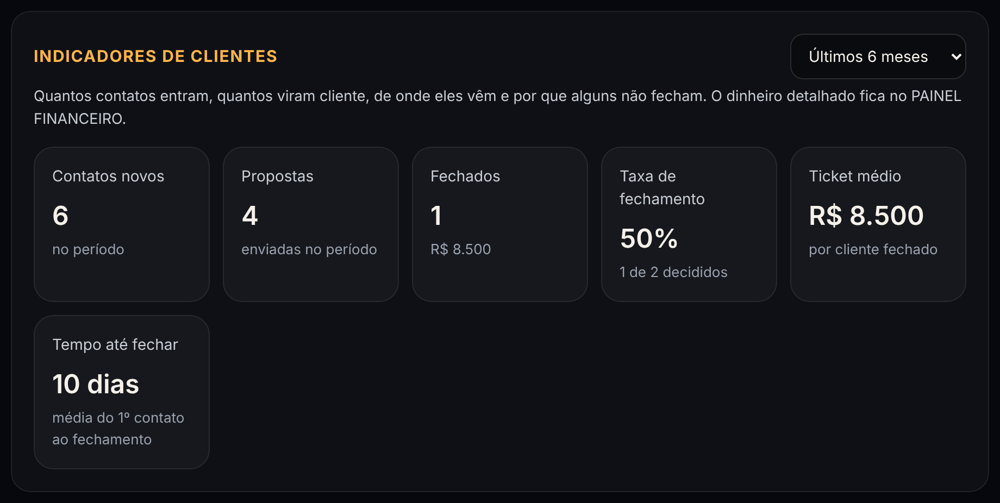
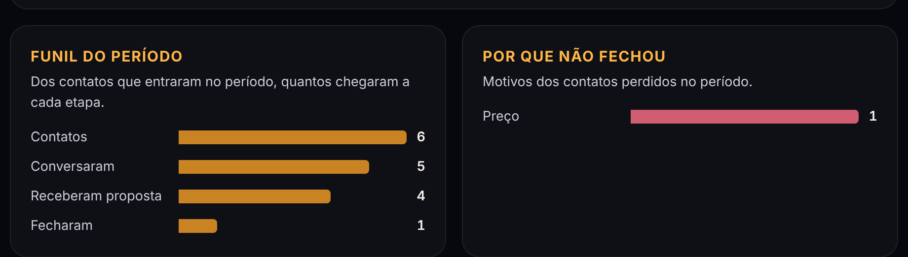

09 · Marketing — CRM
Indicadores e redes sociais
Quantos contatos entram, quantos viram cliente, de onde eles vêm e por que alguns não fecham. Escolha o período no alto (mês, 3, 6, 12 meses ou ano).

Contatos, propostas, fechados, taxa de fechamento, ticket médio e tempo até fechar.

Funil do período e motivos de perda.
O que mais tem
- 1Mês a mês: contatos novos × fechados.
- 2De onde vêm os clientes, por serviço e por campanha: contatos, fechados, taxa e valor.
- 3✨ ANALISTA IA: lê só os totais (sem nomes de clientes) e diz o que está funcionando e o que fazer na semana.
- 4Redes sociais: lance seguidores e alcance uma vez por mês; o gráfico mostra o crescimento e a tabela cruza com os clientes que cada rede trouxe.
Conta nova vê um negócio de EXEMPLO só na tela — some no primeiro contato cadastrado.